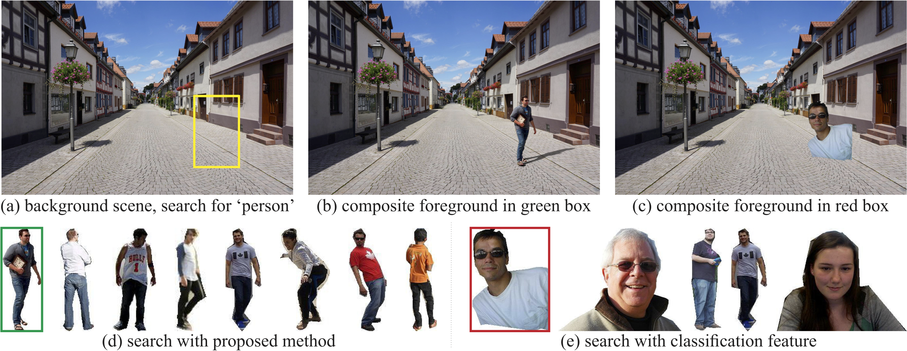

Hengshuang Zhao1 Xiaohui Shen2 Zhe Lin3 Kalyan Sunkavalli3 Brian Price3 Jiaya Jia1,4
1 The Chinese Univeristy of Hong Kong 2 ByteDance AI Lab 3 Adobe Research 4 Tencent Youtu Lab
|  |
|
Compositing-aware image search. Given a background image as a query, the task is to find foreground objects of a certain category that can be composited into the background at a specific location, as indicated by the rectangle. |
Abstract
We present a new image search technique that, given a background image, returns compatible foreground objects for image compositing tasks. The compatibility of a foreground object and a background scene depends on various aspects such as semantics, surrounding context, geometry, style and color. However, existing image search techniques measure the similarities on only a few aspects, and may return many results that are not suitable for compositing. Moreover, the importance of each factor may vary for different object categories and image content, making it difficult to manually define the matching criteria. In this paper, we propose to learn feature representations for foreground objects and background scenes respectively, where image content and object category information are jointly encoded during training. As a result, the learned features can adaptively encode the most important compatibility factors. We project the features to a common embedding space, so that the compatibility scores can be easily measured using the cosine similarity, enabling very efficient search. We collect an evaluation set consisting of eight object categories commonly used in compositing tasks, on which we demonstrate that our approach significantly outperforms other search techniques.
Download
| "Compositing-aware Image Search"
Hengshuang Zhao, Xiaohui Shen, Zhe Lin, Kalyan Sunkavalli, Brian Price, Jiaya Jia. European Conference on Computer Vision (ECCV), 2018. |
Architecture
|
Overall framework of the proposed compositing-aware image search (CAIS) system. A symmetric two-stream feature embedding network is utilized to extract background and foreground image features separately, in which a MCB module is introduced to incorporate category information. A feature transformation module is then performed to generate the final feature representations. |
Performance
Visualization
 |
|
Visual search results: in each example, the yellow box indicates the position of foreground object to be inserted. The 1st to the 4th rows show the retrieved results using RealismCNN, shape information, classification features and our approach, respectively. The text boxes with ‘green’ and ‘red’ color in the top left corner of the foregrounds represent ‘positive’ and ‘negative’ foregrounds respectively. Our returned results contain more compatible foregrounds for image compositing. |
|
Generalization to new categories: we test our method on new categories that have not been trained. Even without training on the new classes, the algorithm still works reasonably well. Interestingly, the retrieved clocks are all in rectangular shape, mostly because of the bias induced from the ‘painting’ category during training. Our method can easily scale up to much more categories if new training data are available, as the category information can be incorporated through the word feature branch, while the network architecture would still remain the same. |
|
Our search results are tuned to location and aspect ratio of the bounding box. |
Last update: Aug. 18, 2018